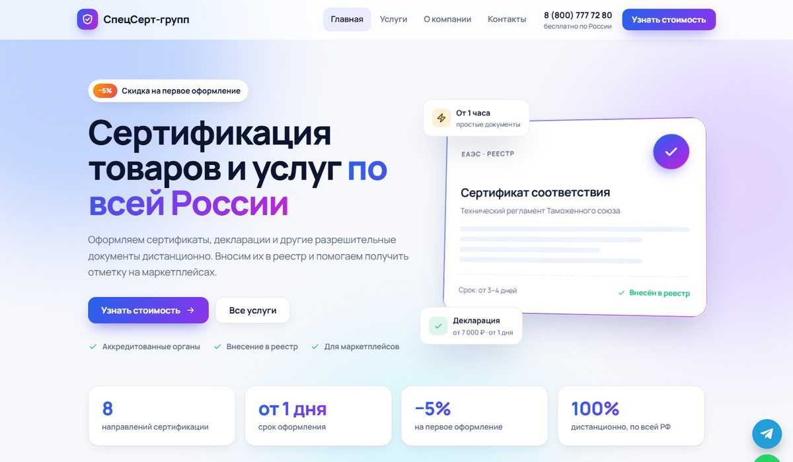

01
Дизайн, который продаёт
Сайт с первого экрана отвечает на главные вопросы клиента: что оформят, сколько стоит, как быстро.
- Первый экран с карточкой-сертификатом и плашками «от 1 дня», «от 7 000 ₽»
- Иконки у всех восьми направлений, карточки оживают при наведении
- Блок цен с выделенной популярной услугой
- Плавное появление блоков и тёмная тема
